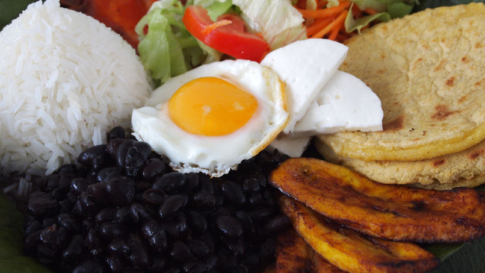

Casado Típico
Casadito
¿Alguna vez has estado en Costa Rica o has probado los principales platos de su comida tradicional? La comida costarricense incorpora varios elementos básicos de la cocina latinoamericana y se diferencia por ser mucho más saludable con la inclusión de una gran variedad de frutas y verduras frescas.
La calidad de los siguientes platos cuando están en casa es inmejorable, así que intenta aplicarlos en algunos platos de tu comida diaria.
Casado o comida típica, es el plato más común en Costa Rica. Se compone de frijoles, arroz con pimientos rojos finamente cortados en cubitos y cebollas, plátanos fritos, una ensalada de repollo con tomate y zanahoria, y una selección de carne entre pollo, pescado, carne de cerdo o de ternera con cebollas asadas.
La carne que viene con un casado a la parrilla o salteados, pero nunca frito. A veces, el casado incluye papas fritas o verduras adicionales, tales como los aguacates.